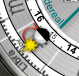
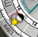
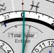
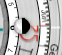
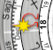

Predicting Eclipses with
EMERALD_PRODUCT
Background
The lunar node hands (Ω) and the "eclipse dial" on
Geneva's back can be used as a rough guide to predicting
solar and lunar eclipses.
The nodal hands indicate the right ascension of the ascending and
descending nodes of the Moon's orbit. These are the places at
which the Moon's orbit crosses the Sun's orbit as seen from the center of Earth;
there are always two such places, 180 degrees apart. When an eclipse
occurs, both the Sun and the Moon must always be fairly close to one of the nodes.
If the Sun and Moon are very close to one another, the "eclipse needle" in the dial will
rotate from its far left position, and will indicate the degree of eclipse at the location
of the iPhone (or another location, if you've set a different location).
If the needle reaches the first tick mark, the conditions are correct for a partial eclipse at the
current location (unless the eclipse is below the horizon). If it reaches the second tick mark,
the conditions indicate a total eclipse at the current location (again, unless the eclipse is below
the horizon). The window in the eclipse dial will indicate what the current eclipse state is (none,
"Partial Solar", "Annular Solar", "Total Solar", "Partial Lunar", "Total Lunar"). Note that for this
purpose penumbral eclipses are ignored.
Note that the conditions for a solar eclipse are very sensitive to the location of the observer, and
when there is a total solar eclipse it will only be visible in a small range of locations on the Earth.
A lunar eclipse, on the other hand, is visible to the
entire hemisphere where the Moon is above the horizon, though part of that hemisphere may be in
twilight making the eclipse difficult to observe.
Correlating with known dates
As with all EMERALD_PRODUCT watches, youYou can pull the crown and set the date and time
to any time you wish. On Geneva itIt is easiest to set the year with the century and year
windows (and using the forward/reverse switch at the very bottom center of the watch case),
then switch over to the front side of the watch and set the month, day, and time of day.
Then finally switch to the back and proceed.
For example, there was
a solar
eclipse on Nov 13 2012 at about 22:11:48 UT
(it was centered in the southwestern Pacific; viewers in Australia and New Zealand
saw a partial eclipse but totality was visible only in a narrow band across the ocean).
If you set that time on the front of GENEVA_WATCH (make sure to use
the UT hand to set the time and make note of the UT +/- indicators
when setting the date),

the back side should look like this:
on Nov 13 2012 at about 22:11:48 UT
(it was centered in the southwestern Pacific; viewers in Australia and New Zealand
saw a partial eclipse but totality was visible only in a narrow band across the ocean).
If you set that time on the front of GENEVA_WATCH (make sure to use
the UT hand to set the time and make note of the UT +/- indicators
when setting the date),

the back side should look like this:
The Sun and Moon hands
are aligned (this always happens every time there is a new moon), and
they are both very close to the nodal
hand Ω (in this case it is the
ascending node, but either node could appear here).
As mentioned above, this eclipse wasn't at totality where most of EMERALD_PRODUCT's
customers are. But you can temporarily set a different location for EMERALD_PRODUCT
using the Settings panel, and then you can watch the eclipse needle
move to "Total Eclipse". For this eclipse, at the time mentioned
above, set the latitude to -39.95 (S)

and the longitude to -161.33 (W), and at the time given above
the eclipse needle will look like the image at the right.
For a lunar eclipse, the situation is slightly different. For example, there
was
a total
lunar eclipse on 2010 Dec 21 at about
08:16:57 UT and it was most visible in longitudes aligned with the
western United States. Setting that time on the front of GENEVA_WATCH
(again being careful to set the UT time and date properly) should
result in the back side appearing


as shown to the left and right.
Note that
neither the Sun nor the Moon are exactly aligned with the nodal
points, but they're close and they are exactly 180 degrees apart
(as they are on every full moon).
If the Moon is above the horizon at your location at this time, you
can see the eclipse needle move
 on GENEVA_WATCH without changing the location used in EMERALD_PRODUCT. At
the time indicated above, the eclipse needle will look like the image on the right.
on GENEVA_WATCH without changing the location used in EMERALD_PRODUCT. At
the time indicated above, the eclipse needle will look like the image on the right.
You can use this same technique with historical eclipses, moving the
date and century hands on the front of GENEVA_WATCH to match the dates of
known eclipses, such as
this NASA
list of historical solar eclipses, this list of upcoming solar eclipses, or this
list of upcoming lunar eclipses. Take
care to set the dates correctly, especially with BCE dates where dates on the front of GENEVA_WATCH
are read counter-clockwise from 12 o'clock.
Here are some upcoming solar and lunar eclipses, with optimum locations marked for solar eclipses:
Discovering dates with no external knowledge
You can use the
opposite technique to discover times of eclipses in
the past or future, of course: Pull the crown, as usual when setting
times, and then drag the Sun hand on the back of GENEVA_WATCH around until it is close to a nodal hand
Ω. Then drag the Moon hand
until it is either aligned with the Sun (indicating a possible solar
eclipse) or 180 degrees opposite the Sun (indicating a possible lunar
eclipse).
You can also use the "next moon phase" pusher to position the Moon; it
will stop where the ecliptic longitudes of the Sun and Moon are
identical or are off by 90, 180, or 270 degrees. This pusher is available
when the crown is pulled, and is at the lower left of the watch case when
viewing the back. You can go backwards by phases if you first tap the forward/reverse
switch below 6 oclock; it will turn red to indicate reverse.
The new-moon and full-moon points aren't exactly the points of maximum eclipse,
however; once you are at a phase point, you can then move the sidereal
minute hand back and forth, watching the eclipse needle, to see where
the needle reaches its maximum. Then at that peak you can read the
eclipse window to see what kind of eclipse, if any, will be visible at this location.
The Sun and Moon hands can be surprisingly far away from the nodal
hands and still have an eclipse be possible. The angle between the
Moon's orbit and the Sun's is quite small (about 5 degrees), so the
Moon can be a fair distance from the node in right ascension (RA) (perhaps as much as 10 degrees) and still be
sufficiently close in ecliptic latitude to result in a partial eclipse.
On the other hand, just because the nodal point is close doesn't
mean that an eclipse is guaranteed, as mentioned earlier. Use the eclipse needle
for more precise results, and please don't plan your once-in-a-lifetime photograph solely
on the data presented in EMERALD_PRODUCT; there are better tools for that on the web
(you can start at the NASA sites linked above).